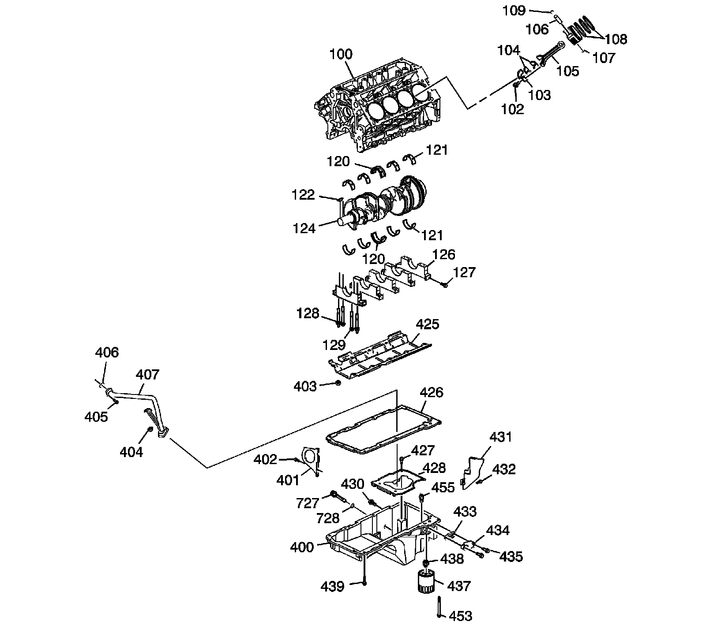

Lower Engine Assembly
Disassembled Views
Lower Engine Assembly

100 - Engine Block
102 - Connecting Rod Bolt
103 - Connecting Rod Cap
104 - Connecting Rod Bearing
105 - Connecting Rod
106 - Piston Pin
107 - Piston
108 - Piston Ring Set
109 - Piston Pin Retainer
120 - Crankshaft Thrust Bearing
120 - Crankshaft Thrust Bearing
121 - Crankshaft Bearing
121 - Crankshaft Bearing
122 - Crankshaft Balancer Key
124 - Crankshaft
126 - Crankshaft Bearing Cap
127 - Crankshaft Bearing Cap Bolt - M8
128 - Crankshaft Bearing Cap Stud - M10
129 - Crankshaft Bearing Cap Bolt - M10
400 - Oil Pan
401 - Oil Pan Closeout Cover
402 - Oil Pan Closeout Cover Bolt
403 - Crankshaft Oil Deflector Nut
404 - Oil Pump Suction Pipe Nut
405 - Oil Pump Suction Pipe Bolt
406 - Oil Pump O-Ring Seal
407 - Oil Pump Suction Pipe
425 - Crankshaft Oil Deflector
426 - Oil Pan Gasket
427 - Oil Pan Baffle Bolt
428 - Oil Pan Baffle
430 - Oil Pan Drain Plug
431 - Oil Pan Closeout Cover
432 - Oil Pan Closeout Cover Bolt
433 - Oil Pan Cover Gasket
434 - Oil Pan Cover
435 - Oil Pan Cover Bolt
437 - Oil Filter
438 - Oil Filter Fitting
439 - Oil Pan Bolt
453 - Oil Pan Bolt
455 - Active Fuel Management Oil Pressure Relief Valve
727 - Engine Oil Level Indicator Switch
728 - O-Ring